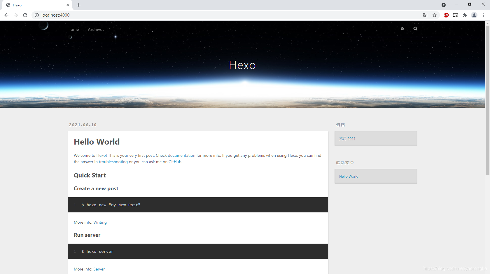
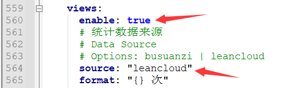
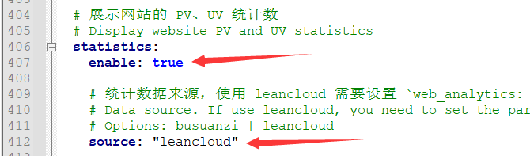

Github搭建个人博客
使用 GitHub + hexo 搭建个人博客
使用Github搭建个人博客
一、准备工作
1、 Github 账号
需要注册一个Github账号，注册过程很简单，在此不多赘述。
2、安装 Git
在电脑上先安装一个Git，后面Hexo部署到Github时要用。
安装完成后在命令行中输入如下命令，配置Git用户名和邮箱地址。
1 | |
3、安装 NodeJS
在电脑上安装 NodeJS ， Hexo 是基于 NodeJS 编写的，所以需要安装 NodeJS 和 npm 工具。
以上完成后在命令行输入命令，检查是否安装成功。
1 | |
二、创建仓库
尤其注意的是仓库名必须和Github的账号保持一致！
可以点击creating a new file创建一个新文件，命名为”index.html”，内容如下：
1 | |
Github Pages 中找到我们的主页，浏览访问
这里展示的主页很简陋，只是给大家演示一下Github Pages的使用方法。
三、安装 Hexo
我们采用 Hexo 来创建我们的博客网站，Hexo 是一个基于 NodeJS 的静态博客网站生成器，使用 Hexo 不需开发，只要进行一些必要的配置即可生成一个个性化的博客网站，非常方便。
打开cmd命令行
1、安装 Hexo
1 | |
2、查看版本
1 | |
3、创建一个项目 hexo-blog 并初始化
1 | |
4、本地启动
1 | |
浏览器访问 http://localhost:4000，页面默认主图风格如下:

四、更换主题
Hexo 默认的主题不太好看，不过官方提供了数百种主题供用户选择，可以根据个人喜好更换，官网主题点这里查看。这里介绍 fluid 主题的使用方法。
1、 安装主题
首先下载最新版本，将压缩包解压后重命名为fluid，将文件夹转移至之前创建的项目hexo-blog下面的themes目录中。
2、修改配置
修改项目hexo-blog根目录下的文件_config.yml:
1 | |
3、创建[关于页]
首次使用主题的“关于页”需要手动创建：
1 | |
创建成功后，编辑项目hexo-blog目录下的/source/about/index.md，添加layout属性。
修改后示例如下：
1 | |
4、本地启动
1 | |
浏览器访问 http://localhost:4000，Fluid主题风格页面如下

五、创建文章
修改项目hexo-blog目录下的_config.yml文件，打开这个配置是为了在生成文章的时候生成一个同名的资源目录用于存放图片文件。
1 | |
执行命令创建一篇新文章，进行测试
1 | |
执行完成后在source\_posts目录下生成了一个md文件和一个同名的资源目录(用于存放图片)
在资源目录测试文章中放一张图片 test.png
在测试文章.md中添加内容如下，演示了图片的三种引用方式。
第一种为官方推荐用法
第二种为markdown语法
第三种和前两种图片存放位置不一样，是将图片放在\source\images目录下。这三种写法在md文件中图片是无法显示的，但是在页面上能正常显示。
1 | |
本地启动，查看效果
1 | |
浏览器访问 http://localhost:4000，页面如下，文章添加成功
六、个性化页面设置
1、浏览器tab页名称
修改项目hexo-blog目录下的_config.yml中的title字段
2、博客标题
修改项目hexo-blog的themes\fluid目录下_config.yml文件中的blog-titile字段。

3、主页正中间文字
修改项目hexo-blog的themes\fluid目录下_config.yml文件中的text字段。
七、添加阅读量统计
Fluid 主题写好了统计阅读量的代码，但是缺少相应配置所以没有开启，需要借助三方服务来统计阅读量，这里是有 Leancloud 的免费服务来进行统计。
1、申请leancloud账号并创建应用
进入官网注册账号，并完成实名认证，验证邮箱

创建应用，选择开发版，进入该应用的 设置->应用凭证，找到 AppID 和 AppKey，记录下来后面配置要用。

2、修改 fluid 配置
打开主题目录 themes\fluid下的 _config.yml 文件，修改如下配置
单篇文章阅读数量统计


页面底部展示网站的 PV、UV 统计数

八、添加评论功能
评论功能的代码已经写好了，只不过没有开启，需要修改一些配置
打开主题目录 themes\fluid 下的 _config.yml 文件，修改如下配置
启用评论插件
重新部署后再访问测试文章页面，评论功能已开启
部署在本地时评论无法提交，会报跨域问题，发布到 GitHub Pages 上之后课正常提交评论
九、发布至Github Pages
1、安装 hexo-deployer-git
1 | |
2、修改项目hexo-blog目录下的_config.yml文件的最后几行，配置Github相关信息
1 | |
其中 token 为 GitHub 的 Personal access tokens ，获取方式如图所示
3、部署到GitHub
1 | |
十、最终效果展示
访问自己的页面网址，个人博客就搭建完成啦！
本博客所有文章除特别声明外，均采用 CC BY-SA 4.0 协议 ，转载请注明出处！